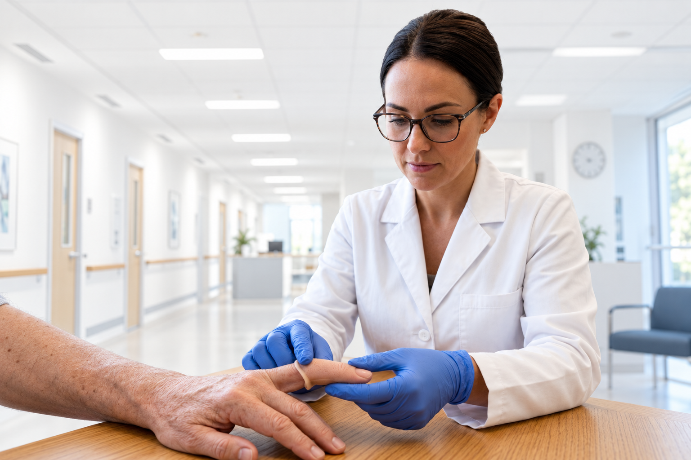

Протезирование верхних конечностей с учётом ваших потребностей и образа жизни
Подберём решение с учётом уровня ампутации, повседневных задач и ваших пожеланий. Поможем разобраться в возможностях косметических, рабочих и бионических протезов, оформлении документов и обучении использованию протеза.
Подбираем протез исходя из задач и особенностей пациента.
♧
Помощь с документами
Помогаем получить протез за счёт государства по ИПРА и электронному сертификату при наличии оснований.
▤
Косметическое протезирование
Подбираем форму, цвет и детали, чтобы протез выглядел максимально естественно.
01 / Возможности
Решения в протезировании
Выберите уровень ампутации. Подходящий вид протеза и комплектацию обсудим на консультации.
Уровень ампутации
Пальцы
Индивидуальные косметические протезы пальцев. Подбираем форму, оттенок кожи и детализацию с учётом ваших пожеланий.

02 / Ваш путь
Сопровождаем на каждом этапе протезирования
Сопровождаем на каждом этапе протезирования. Помогаем разобраться с документами, подобрать подходящий протез и научиться им пользоваться.
Консультация
Встреча с протезистом. Обсуждаем ситуацию, уровень ампутации, образ жизни и задачи, которые должен решать протез. Отвечаем на вопросы и составляем план дальнейших шагов.
Работа с документами
Помогаем разобраться с ИПРА (индивидуальной программой реабилитации), электронным сертификатом и оформлением документов для протезирования за счёт государства.
Изготовление протеза
Подбираем комплектацию протеза под ваши потребности, готовим слепок, изготавливаем гильзу и проводим примерку. При необходимости используем временный протез, пока конечность стабилизируется после операции.
Реабилитация
Вместе со специалистами школы ходьбы, помогаем научиться уверенно пользоваться протезом в повседневной жизни и вернуться к привычным делам.
03 / Поддержка
Протезирование за счёт государства
При наличии ИПРА протезирование может быть доступно за счёт государства. В центре LIMB помогаем разобраться, как оформить документы по ИПРА или с использованием электронного сертификата, и сопровождаем на всех этапах.
01
Помощь в оформлении документов
Разберёмся с ИПРА, направлением на МСЭ по форме 088/у и медицинскими выписками. Подготовим медико-техническое заключение (МТЗ), чтобы в программу вошли корректные характеристики протеза.
02
Помощь с электронным сертификатом
Объясним, как оформить сертификат, привязать средства к карте «Мир» и использовать их для оплаты протеза у аккредитованного поставщика.
03
Подберём комплектацию протеза под ваши потребности
Подбираем комплектацию протеза под уровень ампутации, образ жизни, физическую активность и рекомендации, прописанные в ИПРА.
04
Сопровождаем до получения протеза
Поможем пройти весь путь: от обращения в поликлинику до подписания договора и получения изделия.
Оформление зависит от решения МСЭ и условий ИПРА. Центр LIMB помогает с документами и сопровождением, окончательное решение принимают уполномоченные органы.
04 / Почему LIMB
Почему пациенты выбирают нас
01Индивидуальный подбор комплектующих
Под ваши задачи и активность.
02Помощь с ИПРА
Персональный менеджер и полное сопровождение с документами.
03Реабилитация
После получения протеза — помогаем стать его уверенным пользователем.
04Работа со всеми регионами
Принимаем пациентов из любых регионов России.
05Мы сами ходим на протезах, которые создаём
Основатель LIMB более 12 лет пользуется протезом. В нашей команде также работают люди с протезами, поэтому мы знаем потребности пациентов не только как специалисты, но и на собственном опыте.
06Истории пациентов
Реальные истории людей, которые прошли путь протезирования и вернулись к активной жизни.
05 / Истории пациентов
Истории пациентов LIMB
Реальные истории людей, которые прошли путь протезирования и вернулись к активной жизни.